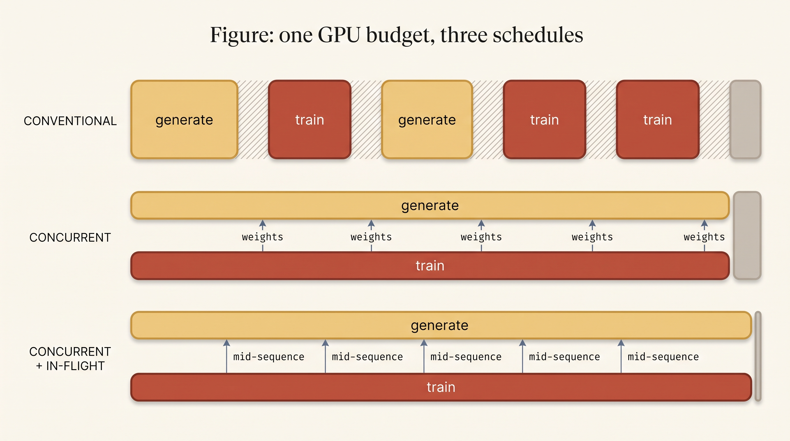
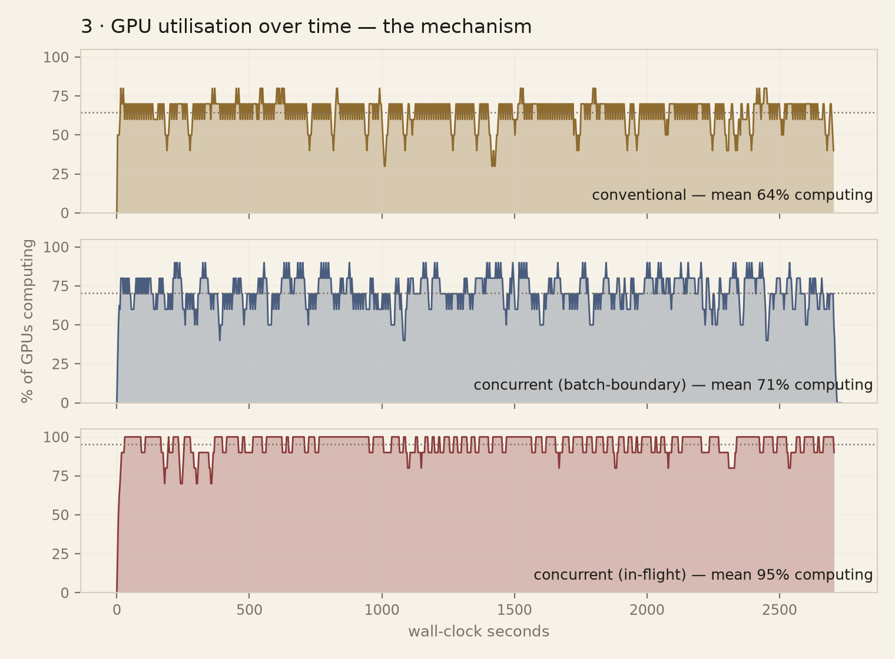
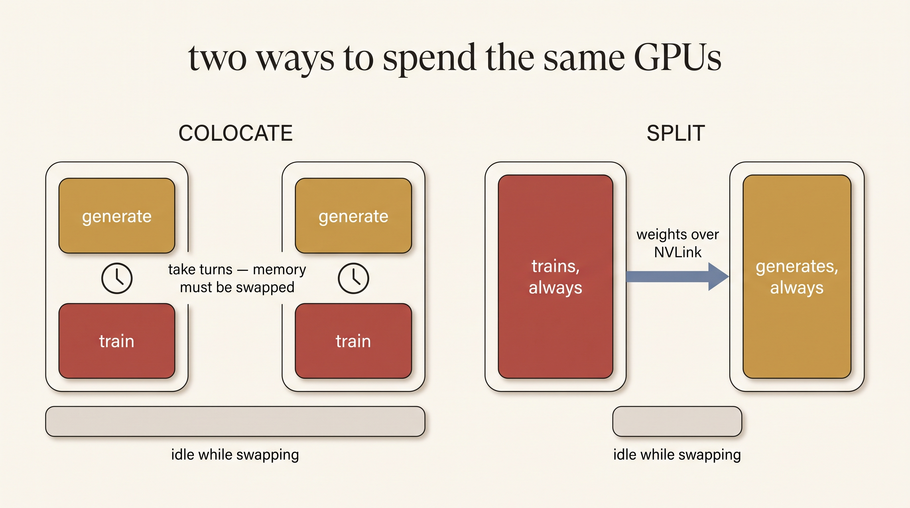
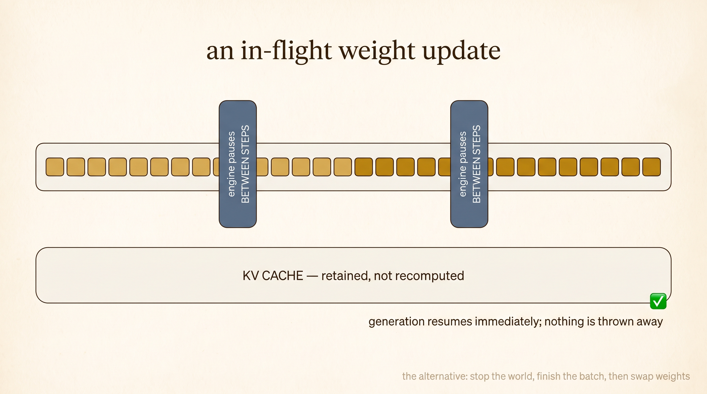
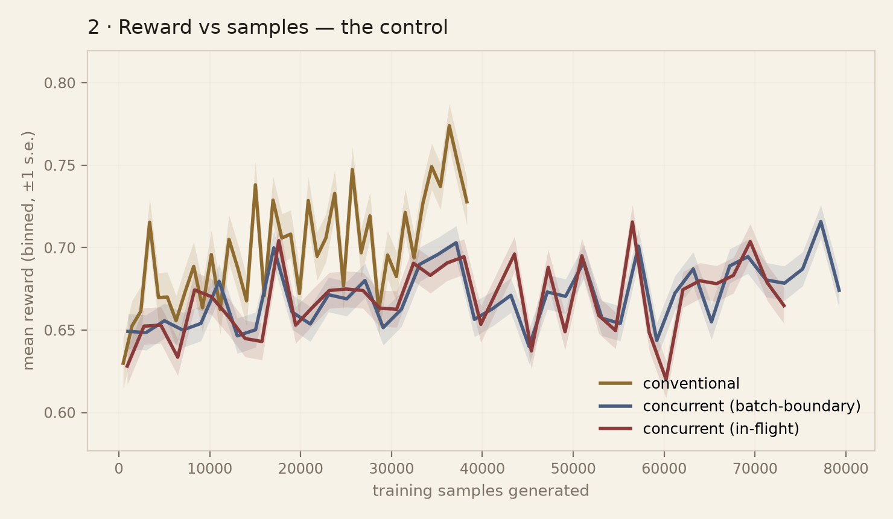
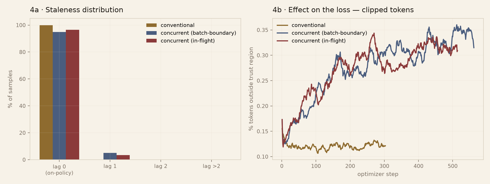
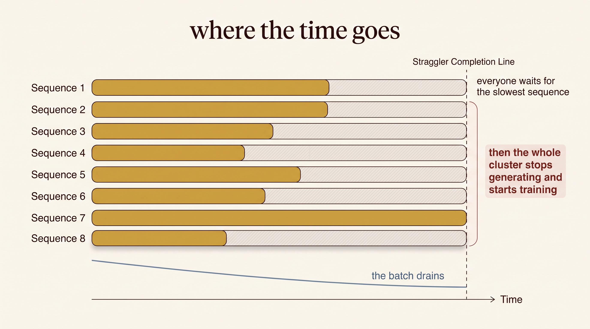

The same GPUs and the same wall-clock, scheduled three ways. Conventional RL alternates in blocks, with idle time between them. Concurrent RL splits the cluster so neither role waits. In-flight updates deliver new weights mid-sequence. The pale bar at the right of each lane is the compute that schedule wastes.
Two mechanisms, one number.
Reinforcement learning on a language model alternates between two workloads that want opposite hardware. Generation is memory-bound and finishes at wildly different times per sequence. Training is compute-bound and synchronous. Run them on the same GPUs and one of them is always waiting.
PipelineRL removes that waiting with two changes at once: it partitions the cluster so some GPUs generate forever while others train forever, and it pushes new weights into the running inference engine mid-sequence, without discarding the KV cache. The published comparison is conventional-versus-both. So of the reported speedup, how much is the partition, and how much is the mid-sequence update?
We ran three arms that share model, data, GRPO implementation, batch shape, seed, library versions and total GPU budget, and differ only in when each GPU does what. Concurrency alone accounts for essentially all of the throughput gain. In-flight updates work exactly as described — and, at two GPUs, buy nothing, because there is almost no staleness left to remove. We say precisely which regime should change that.
Three arms, one variable.
Conventional
Both GPUs alternate. Generate together, stop, train together, swap weights, repeat. Data is perfectly on-policy by construction. This is the colocated pattern veRL implements efficiently — and which the PipelineRL authors use as their baseline.
Concurrent
One GPU generates forever, one trains forever. Neither waits for the other's phase. New weights are applied between generation batches — so every sequence is produced by exactly one policy version.
Concurrent + in-flight
Same partition. But weights land mid-decode: the engine pauses between decode steps, in-flight requests and their KV blocks survive, and sequences continue under the new policy. This is PipelineRL proper.
A → B isolates what concurrency buys. B → C isolates what in-flight weight updates buy on top of it. No published measurement separates the two, and it turns out they are not remotely equal partners.

Concurrency doubles throughput.
| metric | A · conventional | B · concurrent | C · + in-flight |
|---|---|---|---|
| samples / second | 14.34 | 29.37 | 27.39 |
| vs. conventional | — | 2.05× | 1.91× |
| GPUs computing (mean) | 65.6% | 70.0% | 95.2% |
| idle GPU-seconds | 1861 | 1638 | 258 |
| optimizer steps | 303 | 562 | 514 |
| weight updates, of which in-flight | 303 / 0 | 562 / 0 | 514 / 514 |
| mean weight-push | 453 ms | 320 ms | 261 ms |
| mean lag (optimizer steps) | 0.0 | 0.051 | 0.035 |
Qwen2.5-1.5B · GSM8K · 2×H100 · 45 minutes per arm · vLLM 0.18.1. The fairness key, including library versions, matched exactly across all three arms.

waiting does not count as computing: a GPU blocked on an empty
queue is idle from the cluster's point of view.The mechanism, not just the number
Arm A sags on every generate⇄train alternation — the cluster stops generating, releases its KV cache so the trainer can use the memory, steps, and wakes the engine back up. Arm C is a near-solid block.
That memory swap is not incidental. It is the price of colocation: our conventional arm has to offload the optimizer state to host RAM on every iteration, or vLLM cannot re-map its cache and the run dies with an out-of-memory error inside the allocator. veRL's HybridEngine exists precisely to make that swap cheap. PipelineRL's answer is to never do it.

In-flight updates work perfectly — and buy nothing here.
All 514 of arm C's weight updates landed mid-decode with the KV cache retained. We verified the mechanism directly on a live engine: fire a 384-token generation, push weights two seconds into decoding, and check both that the request still returns and that the KV block count is byte-identical before and after. It is. Nothing is dropped, nothing is re-prefilled, and the sequence finishes with early tokens from the old policy and late tokens from the new one.
So why does it not help?
Because at two GPUs there is nothing left to fix. 95% of arm B's samples are already perfectly on-policy — a generation batch completes in roughly the time of one optimizer step, so the weights that produced a sample are almost always the current ones. In-flight updates halve a mean lag of 0.051 down to 0.035. Halving almost-zero is almost-zero.
They are not free: the pause/resume cycle costs about 7% throughput. At this scale that is a straight loss.
Where it should pay: lag grows with the ratio of generation GPUs to trainers, with sequence length, and with length variance. The original paper measures 128 H100s and long reasoning traces — a regime where a sequence can easily outlive several optimizer steps. Our result does not contradict theirs; it locates the boundary.


Small staleness, visible in the loss anyway.

What we cannot claim.
At matched sample budget — identical prompts, identical order — conventional reaches 0.7476 against 0.6978 and 0.6929. That gap is real. We decline to attribute it to staleness, because the arms begin at different rewards: 0.6650 / 0.6510 / 0.6417 over their first 10% of samples, before training could possibly have separated them.
Same base model, same seed, same prompts. The likely cause is the generator, not the
scheduler: arm A generates with TP=2 and arms B and C with TP=1.
Tensor-parallel reduction order perturbs logits at the last bit, and under temperature-1
sampling a perturbed logit changes the entire sampled trajectory. The arms are drawing from
measurably different distributions before any learning happens.
Settling it needs two things: scoring a held-out set with fixed decoding instead of reading reward off training rollouts, and matching generator tensor-parallelism across arms. We regard the throughput and utilisation results as sound, and the learning comparison as open. It is the assignment's stretch goal.
Two GPUs compresses the effect. The bubble grows with cluster size and sequence-length variance; with a single generation GPU there is no "everyone waits for the straggler" effect at all — only phase alternation. Our 2.05× is a lower bound on what concurrency buys. Reproducing a result at the wrong scale and finding less than the authors is not a failed experiment. Failing to say so would be.
A comparison tool that refuses to lie.
Building this taught us more than the result did. Six separate bugs in our own code produced confident, well-formed, wrong output rather than crashing. Each is now an assertion that stops the run:
Every GPU is in exactly one state at every instant, so accounted GPU-seconds must equal n_gpus × duration. Violation means the event stream is out of order — the analyser refuses to report a utilisation split rather than reporting a plausible one.
An arm that leaves a GPU idle raced with a handicap. Our first 4-GPU run did exactly this — a single-GPU trainer given two GPUs — and the resulting "conventional wins" was an artefact of the missing GPU.
Every group must be rollouts of the same prompt. One rollout per prompt also satisfies a naive count check, and then the advantage baseline averages over unrelated questions. It still trains. It is not GRPO.
The fairness key includes vLLM / PyTorch / Transformers versions and GPU model. Without it, running one arm on a different engine version passes silently.
The assertions are the part of this artifact we would most encourage others to copy. A comparison harness that cannot fail loudly will eventually publish something false.
Run the race on your own GPUs.
Everything runs on Modal. The smoke test costs a few dollars and validates all three arms end-to-end before you spend anything real.
# 0 · math invariants — seconds, free, no GPU python3 tests/test_math.py # 1 · all three arms, tiny budget, 2×L4 modal run --detach runner/run_race.py::smoke # 2 · the real race modal run --detach runner/run_race.py::race --gpus 2 --minutes 45 \ --model Qwen/Qwen2.5-1.5B-Instruct --arms all # 3 · validate, then publish figures + visualizer data modal volume get race-data /runs/race1 ./runs/ python3 scripts/publish_run.py runs/race1 .venv-plot/bin/python scripts/four_graphs.py runs/race1 reports/race1
publish_run.py will refuse if any invariant fails. That is the point.
See which GPU is doing what, second by second.
The visualizer replays a real run in 3D from the same events.jsonl the
figures are computed from — so the animation and the plots cannot tell different stories.
Each card is one physical GPU; its colour is what that GPU is doing at that instant.
The scoreboard is idle GPU-seconds: compute you paid for and did not use. Watch the conventional panel drain at the end of every generation phase, and watch the slate pulses in the pipeline panel — weights moving while generation continues.

Citation
Built on
Sheng et al., HybridFlow: A Flexible and Efficient RLHF Framework (veRL), arXiv:2409.19256 · Piché et al., PipelineRL, arXiv:2509.19128 · Shao et al., DeepSeekMath (GRPO), arXiv:2402.03300 · Cobbe et al., GSM8K, arXiv:2110.14168 · reference implementation: ServiceNow/pipelinerl